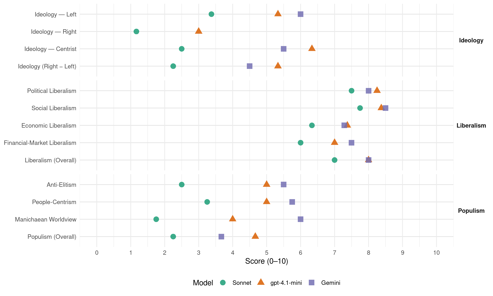

(Israel, 2015)
manifesto_id 72440_201503
Get full text: This site shows derived annotations and short verbatim quotes only. The full manifesto text is © Manifesto Project / WZB — obtain it via manifesto-project.wzb.eu using the manifesto_id above.
Headline scores
| Dimension | Sonnet | gpt-4.1-mini | Gemini |
|---|---|---|---|
| Populism (Overall) | 2.2 | 4.7 | 3.7 |
| Anti-Elitism | 2.5 | 5.0 | 5.5 |
| People-Centrism | 3.2 | 5.0 | 5.8 |
| Manichaean Worldview | 1.8 | 4.0 | 6.0 |
| Ideology (Right − Left) | 2.2 | 5.3 | 4.5 |
| Liberalism (Overall) | 7.0 | 8.0 | 8.0 |
| Political Liberalism | 7.5 | 8.2 | 8.0 |
| Social Liberalism | 7.8 | 8.4 | 8.5 |
| Economic Liberalism | 6.3 | 7.4 | 7.3 |
| Financial-Market Liberalism | 6.0 | 7.0 | 7.5 |
Evidence per dimension
Economic Liberalism
Gemini · score 8.0 · verified · chunk 1
“להגברת התחרות בשוק הבנקאות ולצמצום הריכוזיות”
הרווחה בענף הבנקאות בישראל תביא להגברת התחרות בשוק הבנקאות ולצמצום הריכוזיות בענף. מכלול המהלכים יביא להורדת המחירים בענף הבנקאות
Gemini · score 6.0 · verified · chunk 2
“במטרה לעודד קבלנים ויזמים”
הבנייה הגדולה ממילא, יש הכרח בעידוד פרויקטים במטרה לעודד קבלנים ויזמים לקדם פרויקטים של התחדשות
Gemini · score 8.0 · verified · chunk 3
“פתיחת השוק ליבוא מקביל”
הפחתת ההליך הבירוקרטי בייבוא מוצרים, פתיחת השוק ליבוא מקביל, תוך הגברת האכיפה
Gemini · score 8.0 · verified · chunk 4
“רמת תחרותיות נמוכה במשק הישראלי”
זאת לצד רמת תחרותיות נמוכה במשק הישראלי וריכוזיות גבוהה אחוז ניכר מהעסקים הקטנים נסגרים
Gemini · score 7.0 · verified · chunk 5
“על-ידי עידוד הקמת עסקים קטנים ובינוניים ויצירת מקורות תעסוקה”
הדרך הטובה ביותר להגדלת אפשרויות התעסוקה היא על-ידי עידוד הקמת עסקים קטנים ובינוניים ויצירת מקורות תעסוקה איכותיים, כדוגמת מקצועות היי-טק, ביו-טק ומחקר.
Gemini · score 7.0 · verified · chunk 6
“תוך הגברת התחרותיות בתחום”
במחירים נמוכים מאלה הנהוגים כיום, תוך הגברת התחרותיות בתחום. אזרחים ותיקים.
Gemini · score 7.0 · verified · chunk 8
“להרחבת התחרות בתחום שירותי ההסעה”
ההסעה זמינים ובמחירים נמוכים מאלה הנהוגים כיום, וכן להרחבת התחרות בתחום שירותי ההסעה. עידוד נסיעה בתחבורה
gpt-4.1-mini · score 8.0 · verified · chunk 1
“הגדלת התחרות בשוק הבנקאות בישראל ופירוק הריכוזיות בענף”
הגדלת התחרות בשוק הבנקאות בישראל ופירוק הריכוזיות בענף בשוק הבנקאות בישראל שולטות חמש קבוצות בנקאיות המחזיקות ביותר מ-90% ממנו. הן הרוויחו ב-9 החודשים הראשונים של השנה 5.2 מיליארד שקלים.
gpt-4.1-mini · score 7.0 · verified · chunk 2
“הבאנו לשינוי הקריטריונים בתנאי הזכאות לדיור בר השגה”
שינוי הקריטריונים מעודד השתלבות במעגל העבודה, מיטיב עם בני זוג עובדים, ומגביר את ההגינות בקריטריונים לטובת מעמד הביניים הישראלי. תכנית ‘מחיר מטרה’ שיווק יחידות דיור במחירים הנמוכים בכ-20% ממחירי השוק הנוכחיים.
gpt-4.1-mini · score 7.0 · verified · chunk 3
“הורדת יוקר המחייה רפורמה בייבוא מזון ותמרוקים כיום, ייבוא מזון ותמרוקים דורש בדיקות ואישורים רבים”
הורדת יוקר המחייה רפורמה בייבוא מזון ותמרוקים כיום, ייבוא מזון ותמרוקים דורש בדיקות ואישורים רבים על ידי משרד הבריאות. הליך הייבוא המורכב יוצר עלויות ליבואני המזון, דבר המתגלגל לצרכן, מעלה את מחירי המוצרים ומגביר את יוקר מהחיה.
gpt-4.1-mini · score 8.0 · verified · chunk 4
“הסדר מדיני אף יוביל לשיפור משמעותי בכלכלה הישראלית לטווח ארוך ויגדיל באופן ניכר את פוטנציאל הצמיחה של המשק כולו”
הסדר כזה יהווה מענה להתמודדות עם מכלול האיומים המוזכרים לעיל - ואת האפשרות לצמצם אותם באופן משמעותי ולאורך זמן. הסדר מדיני אף יוביל לשיפור משמעותי בכלכלה הישראלית לטווח ארוך ויגדיל באופן ניכר את פוטנציאל הצמיחה של המשק כולו.
gpt-4.1-mini · score 7.0 · verified · chunk 5
“הדרך הטובה ביותר להגדלת אפשרויות התעסוקה היא בעידוד הקמת עסקים קטנים ובינוניים”
…הדרך הטובה ביותר להגדלת אפשרויות התעסוקה היא בעידוד הקמת עסקים קטנים ובינוניים ויצירת מקורות תעסוקה איכותיים, כדוגמת מקצועות היי-טק, ביו-טק ומחקר. העסקים הקטנים הם הכוח שמניע את הכלכלה הישראלית…
gpt-4.1-mini · score 8.0 · verified · chunk 6
“הכפלת קרן המלגות לתלמידים נזקקים”
…הכפלת קרן המלגות לתלמידים נזקקים. על מנת לדאוג לתלמידים נזקקים ולאפשר להם שוויון הזדמנויות אמיתי, הכפיל שר החינוך לשעבר, שי פירון, את היקף קרן המלגות המיוחדת…
gpt-4.1-mini · score 7.0 · verified · chunk 7
“חקלאות מתפתחת, עתירת ידע וטכנולוגיה”
נפעל לקידום מדיניות המבטאת עידוד חקלאות מתפתחת, עתירת ידע וטכנולוגיה, משמרת סביבה, שטחים פתוחים ונוף, מורשת, קרקע וביטחון. על החקלאות להיות רווחית ומפרנסת לחקלאים ובעלת ערך כלכלי מוסף למדינה.
gpt-4.1-mini · score 7.0 · verified · chunk 8
“הרחבת הפעילות הספורטיבית לכלל החברה באמצעות מערכת החינוך”
ספורט הוא כלי ראשון במעלה לקיום אורח חיים בריא, לגיבוש חברתי ולהנחלת ערכים של שיתוף פעולה, הזדהות, מצוינות וכיבוד כללי משחק. חברה המרבה בפעילות ספורטיבית היא חברה בריאה יותר, פיסית ונפשית.
Sonnet · score 7.0 · verified · chunk 1
“הגברת התחרות בשוק הבנקאות בישראל ופירוק הריכוזיות”
הגברת התחרות בשוק הבנקאות בישראל ופירוק הריכוזיות בענף בשוק הבנקאות בישראל שולטות חמש קבוצות בנקאיות המחזיקות ביותר מ-90% ממנו.
Sonnet · score 6.0 · mixed · chunk 2
“התחרותיות בין קופות החולים וחברות הביטוח”
באמצעות האתר, השקיפות שייצר והכוח שייתן בידי הציבור הישראלי, תגבר התחרותיות בין קופות החולים וחברות הביטוח הפרטיות
Sonnet · score 6.0 · verified · chunk 3
“פתיחת השוק ליבוא מקביל”
קידמנו רפורמה בייבוא מזון ותמרוקים שעיקריה הם הפחתת ההליך הבירוקרטי בייבוא מוצרים, פתיחת השוק ליבוא מקביל, תוך הגברת האכיפה
Sonnet · score 7.0 · verified · chunk 4
“רמת תחרותיות נמוכה במשק הישראלי וריכוזיות גבוהה”
זאת לצד רמת תחרותיות נמוכה במשק הישראלי וריכוזיות גבוהה אחוז ניכר מהעסקים הקטנים נסגרים תוך פחות משנה מיום הקמתם
Sonnet · score 6.0 · mixed · chunk 5
“עידוד הקמת עסקים קטנים ובינוניים”
הדרך הטובה ביותר להגדלת אפשרויות התעסוקה היא על-ידי עידוד הקמת עסקים קטנים ובינוניים ויצירת מקורות תעסוקה
Sonnet · score 6.0 · verified · chunk 6
“הגברת התחרות באמצעות בחירה חופשית”
הגברת התחרות באמצעות בחירה חופשית של סוכני הביטוח. החוסכים השכירים לפנסיה חופשיים לבחור את המוצרים הפנסיוניים שלהם
Sonnet · score 6.0 · verified · chunk 7
“עידוד חקלאות מתפתחת, עתירת ידע וטכנולוגיה”
‘יש עתיד’ מאמינה כי יש לקדם מדיניות המבטאת עידוד חקלאות מתפתחת, עתירת ידע וטכנולוגיה, משמרת סביבה
Sonnet · score 6.0 · verified · chunk 8
“הרחבת התחרות בתחום שירותי ההסעה”
מודל זה יתרום… להרחבת התחרות בתחום שירותי ההסעה
Financial-Market Liberalism
Gemini · score 8.0 · verified · chunk 1
“הגברת התחרות בשוק הבנקאות בישראל ופירוק”
הורדת יוקר המחיה הגברת התחרות בשוק הבנקאות בישראל ופירוק הריכוזיות בענף בשוק הבנקאות בישראל שולטות חמש קבוצות בנקאיות המחזיקות
Gemini · score 7.0 · verified · chunk 3
“תגבר התחרותיות בין קופות החולים וחברות הביטוח הפרטיות”
השקיפות שייצר והכוח שייתן בידי הציבור הישראלי, תגבר התחרותיות בין קופות החולים וחברות הביטוח הפרטיות. התחרות תביא להוזלה
Gemini · score 7.0 · verified · chunk 4
“הלוואות בערבות המדינה לעסקים”
הכפלת קרן ההלוואות בערבות המדינה לעסקים קטנים. העסקים הקטנים והבינוניים זוכים רק לכ-10% מהאשראי הבנקאי העסקי.
Gemini · score 8.0 · verified · chunk 6
“הגברת התחרות באמצעות בחירה חופשית”
קצבאות הפנסיה שלהם בין 10-15% אחוזים. הגברת התחרות באמצעות בחירה חופשית של סוכני הביטוח.
gpt-4.1-mini · score 7.0 · verified · chunk 1
“הגבלת שכר הבכירים בגופים פיננסיים המנהלים כספי ציבור”
הגבלת שכר הבכירים בשוק ההון במסגרת המגמה לצמצום פערי השכר במשק, קידמנו חקיקה שמטרתה להביא לריסון והפחתת שכר הבכירים בגופים פיננסיים המנהלים כספי ציבור.
gpt-4.1-mini · score 7.0 · verified · chunk 4
“הגדלת הערבויות ליצואנים, אשר נועד לסייע ליצואנים להרחיב את פעילותם”
הגדלת הערבויות ליצואנים, אשר נועד לסייע ליצואנים להרחיב את פעילותם, להתמודד עם התחרות הבין לאומית ועם שער הדולר הנמוך, ולהמשיך להוביל את התעשייה הישראלית קדימה. בין היוזמות לסיוע ליצואנים, אושרה תוספת למסגרת הערבות של כ-550 מיליון דולרים לחברת ‘אשרא’ הממשלתית.
Sonnet · score 6.0 · mixed · chunk 1
“הסדרת הסדרי החוב בשוק ההון”
הסדרת הסדרי החוב בשוק ההון בין השנים 2008 עד 2011 בוצעו בישראל 94 הסדרי חוב בשוק איגרות החוב, בסכום כולל עצום של 21 מיליארד שקלים.
Sonnet · score 6.0 · verified · chunk 2
“הגברת השקיפות, לצמצום כפל הביטוחים”
הרפורמה נועדה להביא להגברת השקיפות, לצמצום כפל הביטוחים ולהוזלת ההוצאה הגבוהה על ביטוחי בריאות
Sonnet · score 6.0 · verified · chunk 3
“התחרותיות בין קופות החולים וחברות הביטוח”
באמצעות האתר, השקיפות שייצר והכוח שייתן בידי הציבור הישראלי, תגבר התחרותיות בין קופות החולים וחברות הביטוח הפרטיות. התחרות תביא להוזלה במחירי הביטוחים
Sonnet · score 6.0 · verified · chunk 4
“שיפור בדרוג האשראי של ישראל”
הסדר אזורי יביא לשיפור במצב הגיאופוליטי של ישראל ולהפחתת הסיכון למשקיעים, דבר שיוביל להעלאת דירוג האשראי של ישראל
Sonnet · score 5.0 · verified · chunk 5
“קרן ההלוואות לעסקים קטנים ובינוניים בערבות המדינה”
מסלול ייעודי ומועדף לעסקים מהדרום בקרן ההלוואות לעסקים קטנים ובינוניים בערבות המדינה, על סך 100 מיליון שקלים
Sonnet · score 7.0 · verified · chunk 6
“הורדת מחיר דמי הניהול של 750 אלף חוסכים”
מהלך זה יביא להורדת מחיר דמי הניהול של 750 אלף חוסכים לפנסיה, המשלמים היום את דמי הניהול המקסימליים
Political Liberalism
Gemini · score 9.0 · verified · chunk 1
“בשמירה על טוהר המידות ועל שלטון החוק”
אנו רואים חובה בשמירה על אמון הציבור במערכות השלטוניות והציבוריות. הדרך היחידה להבטיח את אמון הציבור היא בשמירה על טוהר המידות ועל שלטון החוק, ובהרחקת מי שסרח
Gemini · score 7.0 · verified · chunk 2
“משפיע על השיח הדמוקרטי”
נוער מתנדב, מעורב חברתית, משפיע על השיח הדמוקרטי, מעודד סובלנות
Gemini · score 8.0 · verified · chunk 3
“מדינה יהודית ודמוקרטית”
סכנה ממשית לעתידה ולקיומה של מדינת ישראל כמדינה יהודית ודמוקרטית. מפלגת ‘יש עתיד’
Gemini · score 8.0 · verified · chunk 4
“מדינה יהודית ודמוקרטית”
ומהווה סכנה ממשית לעתידה ולקיומה של מדינת ישראל כמדינה יהודית ודמוקרטית.
Gemini · score 8.0 · verified · chunk 5
“השתתפותן המלאה של נשים בכל תחום ובכל זירה, ציבורית או פרטית, חיונית לקיומה של מדינה דמוקרטית”
הישראלית כולה. השתתפותן המלאה של נשים בכל תחום ובכל זירה, ציבורית או פרטית, חיונית לקיומה של מדינה דמוקרטית, מתוקנת וחופשית. אנו רואים חשיבות רבה בקידום
Gemini · score 8.0 · verified · chunk 6
“בחברה דמוקרטית מתקדמת”
לאזרחים יצרנים, בחברה דמוקרטית מתקדמת מערכת ההשכלה הגבוהה
Gemini · score 8.0 · verified · chunk 7
“מדינת ישראל היא מדינה יהודית ודמוקרטית”
דת ומדינה. מדינת ישראל היא מדינה יהודית ודמוקרטית. עם קום המדינה נקבע ה’סטטוס קוו’
Gemini · score 8.0 · verified · chunk 8
“חברה יוצרת, נאורה ומשכילה, דמוקרטית ושוויונית”
קידום ועידוד התרבות והיצירה בישראל הוא יעד יסוד שהציבה ‘יש עתיד’. אנו מאמינים שחברה יוצרת, נאורה ומשכילה, דמוקרטית ושוויונית מחויבת להשקיע
gpt-4.1-mini · score 9.0 · verified · chunk 1
“שמירה על אמון הציבור במערכות השלטוניות והציבוריות”
כמפלגה המחויבת למאבק בשחיתות השלטונית והציבורית ולמיגורן, אנו רואים חובה בשמירה על אמון הציבור במערכות השלטוניות והציבוריות. הדרך היחידה להבטיח את אמון הציבור היא בשמירה על טוהר המידות ועל שלטון החוק, ובהרחקת מי שסרח מהעולם הציבורי.
gpt-4.1-mini · score 8.0 · verified · chunk 2
“מערכת חינוך ראויה היא המכשיר היחיד לצמצום הפערים החברתיים”
מערכת חינוך ראויה היא המכשיר היחיד לצמצום הפערים החברתיים, כדי שכל אזרח יזכה בהזדמנות אמתית להגשמה עצמית, כלכלית ותרבותית. זוהי חובה מוסרית המאפשרת לכל אדם עתיד משמעותי, אך בה בעת מסייעת לחברה בישראל להתמודד עם התחרותיות הגדלה בעולם המודרני.
gpt-4.1-mini · score 8.0 · verified · chunk 3
“המצע המדיני-ביטחוני ישראל נוסדה כמדינת הלאום של העם היהודי”
המצע המדיני-ביטחוני ישראל נוסדה כמדינת הלאום של העם היהודי, ועליה להישאר מדינה שבה רוב יהודי עם גבולות ברי הגנה. על ישראל להוסיף ולקיים יתרון ביטחוני-אסטרטגי איכותי על פני כל המדינות וגורמי הטרור המהווים איום פוטנציאלי כלפיה.
gpt-4.1-mini · score 8.0 · verified · chunk 4
“מדינת ישראל כמדינה יהודית ודמוקרטית”
מהווה סכנה ממשית לעתידה ולקיומה של מדינת ישראל כמדינה יהודית ודמוקרטית. מפלגת ‘יש עתיד’ אינה שותפה למסע ההאשמה-העצמית שמנהל חלק מהציבור הישראלי והיהודי בשאלת ההסדר עם הפלסטינים.
gpt-4.1-mini · score 8.0 · verified · chunk 5
“‘יש עתיד’ תפעל להטמעת המלצות דו”ח וועדת שטאובר להעסקה בשירות המדינה ולהרחבתן למגזר הפרט”
…‘יש עתיד’ תפעל להטמעת המלצות דו”ח וועדת שטאובר להעסקה בשירות המדינה ולהרחבתן למגזר הפרט. המלצות הוועדה כוללות איזון בין משפחה ועבודה, הנהגת שעון עבודה גמיש, ובחירה לבצע חלק מהעבודה, במסגרת שעות נוספות, מהבית…
gpt-4.1-mini · score 9.0 · verified · chunk 6
“החלטה זו מתייחסת לתלמידים הלומדים במוסדות החינוך המיוחד”
…החלטה זו מתייחסת לתלמידים הלומדים במוסדות החינוך המיוחד וכן לאלה הלומדים בכיתות של חינוך מיוחד בבתי ספר רגילים. צעד זה הביא לשיפור חייהם של כ-1,620 תלמידים עם שיתוק מוחין ונכויות פיסיות קשות רב-בעייתיות וכן 2,633 תלמידים עם פיגור קל…
gpt-4.1-mini · score 9.0 · verified · chunk 7
“מדינת ישראל היא מדינה יהודית ודמוקרטית”
דת ומדינה. מדינת ישראל היא מדינה יהודית ודמוקרטית. עם קום המדינה נקבע ה’סטטוס קוו’ כעוגן המרכזי לעיצוב מערכת היחסים שבין דת למדינה. ברבות השנים הפכו ההסדרים לחלקיים ולא מספקים, כשחלקם אף סותרים ערכים מרכזיים אחרים כגון חופש, שוויון ועמדות ליברליות המבקשות להעניק לכל אזרח זכות לבנות את חייו כרצונו.
gpt-4.1-mini · score 7.0 · verified · chunk 8
“חברה יוצרת, נאורה ומשכילה, דמוקרטית ושוויונית מחויבת להשקיע”
קידום ועידוד התרבות והיצירה בישראל הוא יעד יסוד שהציבה ‘יש עתיד’. אנו מאמינים שחברה יוצרת, נאורה ומשכילה, דמוקרטית ושוויונית מחויבת להשקיע בפיתוח התרבות והאמנות, לא פחות מאשר בביטחון, בחינוך וברווחה.
Sonnet · score 8.0 · verified · chunk 1
“שמירה על טוהר המידות ועל שלטון החוק”
הדרך היחידה להבטיח את אמון הציבור היא בשמירה על טוהר המידות ועל שלטון החוק, ובהרחקת מי שסרח מהעולם הציבורי.
Sonnet · score 7.0 · verified · chunk 2
“משפיע על השיח הדמוקרטי”
והפיכתם לנוער מתנדב, מעורב חברתית, משפיע על השיח הדמוקרטי, מעודד סובלנות, מכבד את האחר ומוקיע תופעות של גזענות ואלימות
Sonnet · score 7.0 · verified · chunk 3
“מדינה יהודית ודמוקרטית”
מהווה סכנה ממשית לעתידה ולקיומה של מדינת ישראל כמדינה יהודית ודמוקרטית
Sonnet · score 8.0 · verified · chunk 4
“מדינה יהודית ודמוקרטית השוכנת בגבולות בטוחים ומוכרים”
הוויתור על חלק משטחי ארץ ישראל ההיסטורית הוא חלק הכרחי מהמלחמה על קיומה של מדינה יהודית בארץ ישראל, שלה רוב יהודי ושהיא מדינה דמוקרטית השוכנת בגבולות בטוחים ומוכרים
Sonnet · score 8.0 · verified · chunk 5
“שוויון בין המינים הוא ערך מרכזי בחברה דמוקרטית”
נשים. שוויון בין המינים הוא ערך מרכזי וחשוב בחברה דמוקרטית. מדינת ישראל, אשר העמידה את השוויון
Sonnet · score 7.0 · verified · chunk 6
“בחברה דמוקרטית מתקדמת”
יש עתיד רואה בהשכלה הגבוהה אבן דרך להשתלבות בשוק העבודה ולהפיכתם של הסטודנטים לאזרחים יצרנים, בחברה דמוקרטית מתקדמת
Sonnet · score 8.0 · verified · chunk 7
“כתיבת חוקה לישראל”
מפלגת ‘יש עתיד’ תרכיב צוות של אנשי רוח ומשפט ישראלים, שיכתוב הצעת חוקה לישראל, אשר תובא בפני הכנסת ובפני הציבור
Sonnet · score 7.0 · verified · chunk 8
“דמוקרטית ושוויונית מחויבת להשקיע”
אנו מאמינים שחברה יוצרת, נאורה ומשכילה, דמוקרטית ושוויונית מחויבת להשקיע בפיתוח התרבות
Liberalism (Overall)
Gemini · score 8.0 · verified · chunk 1
“בשמירה על טוהר המידות ועל שלטון החוק”
אנו רואים חובה בשמירה על אמון הציבור במערכות השלטוניות והציבוריות. הדרך היחידה להבטיח את אמון הציבור היא בשמירה על טוהר המידות ועל שלטון החוק, ובהרחקת מי שסרח
Gemini · score 7.0 · verified · chunk 2
“ללא הבדל דת, גזע, מין”
לחיים משותפים של שכבות האוכלוסייה במדינת ישראל, ללא הבדל דת, גזע, מין, מוגבלות או זהות מינית
Gemini · score 8.0 · verified · chunk 3
“פתיחת השוק ליבוא מקביל”
הפחתת ההליך הבירוקרטי בייבוא מוצרים, פתיחת השוק ליבוא מקביל, תוך הגברת האכיפה
Gemini · score 8.0 · verified · chunk 4
“רמת תחרותיות נמוכה במשק הישראלי”
זאת לצד רמת תחרותיות נמוכה במשק הישראלי וריכוזיות גבוהה אחוז ניכר מהעסקים הקטנים נסגרים
Gemini · score 8.0 · verified · chunk 5
“שוויון בין המינים הוא ערך מרכזי וחשוב בחברה דמוקרטית”
מחויבת למהלך היסטורי זה ותתמוך בהעצמתו. נשים. שוויון בין המינים הוא ערך מרכזי וחשוב בחברה דמוקרטית. מדינת ישראל, אשר העמידה את השוויון כערך
Gemini · score 8.0 · verified · chunk 6
“זכויות הקהילה הגאה בישראל”
בכל ליבנו למלחמה על זכויות הקהילה הגאה בישראל. התפקיד שלנו הוא ליצור
Gemini · score 9.0 · verified · chunk 7
“להעניק לכלל אזרחיה שוויון זכויות”
יהודית ודמוקרטית, וככזו עליה לפעול כדי להעניק לכלל אזרחיה שוויון זכויות. אוכלוסיית המיעוטים במדינת
Gemini · score 8.0 · verified · chunk 8
“חברה יוצרת, נאורה ומשכילה, דמוקרטית ושוויונית”
קידום ועידוד התרבות והיצירה בישראל הוא יעד יסוד שהציבה ‘יש עתיד’. אנו מאמינים שחברה יוצרת, נאורה ומשכילה, דמוקרטית ושוויונית מחויבת להשקיע
gpt-4.1-mini · score 8.0 · verified · chunk 1
“שמירה על אמון הציבור במערכות השלטוניות והציבוריות”
כמפלגה המחויבת למאבק בשחיתות השלטונית והציבורית ולמיגורן, אנו רואים חובה בשמירה על אמון הציבור במערכות השלטוניות והציבוריות. הדרך היחידה להבטיח את אמון הציבור היא בשמירה על טוהר המידות ועל שלטון החוק, ובהרחקת מי שסרח מהעולם הציבורי.
gpt-4.1-mini · score 8.0 · verified · chunk 2
“מערכת חינוך ראויה היא המכשיר היחיד לצמצום הפערים החברתיים”
מערכת חינוך ראויה היא המכשיר היחיד לצמצום הפערים החברתיים, כדי שכל אזרח יזכה בהזדמנות אמתית להגשמה עצמית, כלכלית ותרבותית. זוהי חובה מוסרית המאפשרת לכל אדם עתיד משמעותי, אך בה בעת מסייעת לחברה בישראל להתמודד עם התחרותיות הגדלה בעולם המודרני.
gpt-4.1-mini · score 8.0 · verified · chunk 3
“המצע המדיני-ביטחוני ישראל נוסדה כמדינת הלאום של העם היהודי”
המצע המדיני-ביטחוני ישראל נוסדה כמדינת הלאום של העם היהודי, ועליה להישאר מדינה שבה רוב יהודי עם גבולות ברי הגנה. על ישראל להוסיף ולקיים יתרון ביטחוני-אסטרטגי איכותי על פני כל המדינות וגורמי הטרור המהווים איום פוטנציאלי כלפיה.
gpt-4.1-mini · score 8.0 · verified · chunk 4
“הסדר מדיני אף יוביל לשיפור משמעותי בכלכלה הישראלית לטווח ארוך ויגדיל באופן ניכר את פוטנציאל הצמיחה של המשק כולו”
הסדר כזה יהווה מענה להתמודדות עם מכלול האיומים המוזכרים לעיל - ואת האפשרות לצמצם אותם באופן משמעותי ולאורך זמן. הסדר מדיני אף יוביל לשיפור משמעותי בכלכלה הישראלית לטווח ארוך ויגדיל באופן ניכר את פוטנציאל הצמיחה של המשק כולו.
gpt-4.1-mini · score 8.0 · verified · chunk 5
“‘יש עתיד’ מחויבת למיגור הדרת הנשים מהמרחב הציבורי, למניעת התייחסויות מחפיצות ומשפילות כלפי נשים”
…‘יש עתיד’ מחויבת למיגור הדרת הנשים מהמרחב הציבורי, למניעת התייחסויות מחפיצות ומשפילות כלפי נשים במדיה ובמרחב הציבורי ולמאבק בתופעת עבירות המין והאלימות נגד נשים…
gpt-4.1-mini · score 9.0 · verified · chunk 6
“הכפלת קרן המלגות לתלמידים נזקקים”
…הכפלת קרן המלגות לתלמידים נזקקים. על מנת לדאוג לתלמידים נזקקים ולאפשר להם שוויון הזדמנויות אמיתי, הכפיל שר החינוך לשעבר, שי פירון, את היקף קרן המלגות המיוחדת…
gpt-4.1-mini · score 8.0 · verified · chunk 7
“מדינת ישראל היא מדינה יהודית ודמוקרטית”
דת ומדינה. מדינת ישראל היא מדינה יהודית ודמוקרטית. עם קום המדינה נקבע ה’סטטוס קוו’ כעוגן המרכזי לעיצוב מערכת היחסים שבין דת למדינה. ברבות השנים הפכו ההסדרים לחלקיים ולא מספקים, כשחלקם אף סותרים ערכים מרכזיים אחרים כגון חופש, שוויון ועמדות ליברליות המבקשות להעניק לכל אזרח זכות לבנות את חייו כרצונו.
gpt-4.1-mini · score 7.0 · verified · chunk 8
“חברה יוצרת, נאורה ומשכילה, דמוקרטית ושוויונית מחויבת להשקיע”
קידום ועידוד התרבות והיצירה בישראל הוא יעד יסוד שהציבה ‘יש עתיד’. אנו מאמינים שחברה יוצרת, נאורה ומשכילה, דמוקרטית ושוויונית מחויבת להשקיע בפיתוח התרבות והאמנות, לא פחות מאשר בביטחון, בחינוך וברווחה.
Sonnet · score 7.0 · verified · chunk 1
“הגברת התחרות בשוק הבנקאות בישראל ופירוק הריכוזיות”
הגברת התחרות בשוק הבנקאות בישראל ופירוק הריכוזיות בענף בשוק הבנקאות בישראל שולטות חמש קבוצות בנקאיות המחזיקות ביותר מ-90% ממנו.
Sonnet · score 7.0 · verified · chunk 2
“ללא הבדל דת, גזע, מין, מוגבלות או זהות מינית”
על מיגור הגזענות וחינוך לחיים משותפים של שכבות האוכלוסייה במדינת ישראל, ללא הבדל דת, גזע, מין, מוגבלות או זהות מינית
Sonnet · score 7.0 · verified · chunk 3
“הזכות להקים משפחה היא זכות בסיסית”
הזכות להקים משפחה היא זכות בסיסית השמורה לכל אדם. על מנת לאפשר לזוגות חד מיניים ולנשים לממש את זכותם להפוך להורים
Sonnet · score 7.0 · verified · chunk 4
“מדינה יהודית ודמוקרטית השוכנת בגבולות בטוחים ומוכרים”
הוויתור על חלק משטחי ארץ ישראל ההיסטורית הוא חלק הכרחי מהמלחמה על קיומה של מדינה יהודית בארץ ישראל, שלה רוב יהודי ושהיא מדינה דמוקרטית השוכנת בגבולות בטוחים ומוכרים
Sonnet · score 7.0 · verified · chunk 5
“שוויון מלא בין נשים וגברים”
מאמינה כי המדינה אחראית לקידום מעמד האישה ולהשגת שוויון מלא בין נשים וגברים
Sonnet · score 7.0 · verified · chunk 6
“תמיכה בקהילה הגאה, בזכויות שלה, בשוויון שלה בפני החוק”
קהילה גאה. תמיכה בקהילה הגאה, בזכויות שלה, בשוויון שלה בפני החוק, זה חלק ממה שמגדיר אותנו כבני אדם
Sonnet · score 7.0 · verified · chunk 7
“תפישות ליברליות בנות-זמננו”
החוקה עצמה, שתיכתב ברוח הכרזת העצמאות - לאור חזונם של נביאי ישראל מחד ומתוך תפישות ליברליות בנות-זמננו מאידך
Sonnet · score 7.0 · verified · chunk 8
“דמוקרטית ושוויונית מחויבת להשקיע”
אנו מאמינים שחברה יוצרת, נאורה ומשכילה, דמוקרטית ושוויונית מחויבת להשקיע בפיתוח התרבות
Anti-Elitism
Gemini · score 8.0 · verified · chunk 1
“לפוליטיקאים שעסוקים בעצמם ובטובתם האישית”
המדינה שלנו צריכה להיות שייכת למעמד הביניים ולאלה שנאבקים להיות חלק ממנו. לא למושחתים, לפוליטיקאים שעסוקים בעצמם ובטובתם האישית, לבעלי האינטרסים, לתאגידים הגדולים
Gemini · score 4.0 · verified · chunk 2
“אפליה ברורה לטובת הסקטור החרדי”
במקביל ביטלנו את קריטריון “ותק בנישואין”, שיצר אפליה ברורה לטובת הסקטור החרדי. שינוי הקריטריונים מעודד
Gemini · score 6.0 · verified · chunk 7
“חומות בצורות של נוקשות מצד דיינים שמנותקים”
כשהם רוצים להתגייר הם נתקלים בחומות בצורות של נוקשות מצד דיינים שמנותקים מאתגרי השעה ומהצורך לחבר
Gemini · score 4.0 · verified · chunk 8
“לנתק בין שיקולים פוליטיים לבין תקצוב”
העצמת המועצה הישראלית לתרבות ואומנות. בכדי להביא לניתוק בין שיקולים פוליטיים לבין תקצוב מוסדות תרבות ויוצרים, ישונו תפקידי המועצה
gpt-4.1-mini · score 9.0 · verified · chunk 1
“לא למושחתים, לפוליטיקאים שעסוקים בעצמם ובטובתם האישית”
המדינה שלנו צריכה להיות שייכת למעמד הביניים ולאלה שנאבקים להיות חלק ממנו. לא למושחתים, לפוליטיקאים שעסוקים בעצמם ובטובתם האישית, לבעלי האינטרסים, לתאגידים הגדולים או לוועדים הגדולים. במשך שנים התנהל בישראל משחק לא הוגן ששירת קבוצות אינטרסים, בעלי הון וועדי עובדים.
gpt-4.1-mini · score 3.0 · verified · chunk 4
“‘ברית בלתי קדושה’ של אנשי אקדמיה המועלים בתפקידם האינטלקטואלי לצד תנועות רדיקליות”
נגד ישראל באירופה ובארה׳׳ב בידי ‘ברית בלתי קדושה’ של אנשי אקדמיה המועלים בתפקידם האינטלקטואלי לצד תנועות רדיקליות מימין ומשמאל ואנטישמים מן הסוג הישן והרע, כשכל אלה ממומנים בכספי הנפט האיסלאמי.
gpt-4.1-mini · score 3.0 · verified · chunk 5
“ראשי הרשויות יוצאים כל בוקר אל החזית האזרחית, והם דורשים, מהשלטון, יותר כלים ומשאבים”
…השלטון המקומי הוא הזרוע הביצועית של השלטון המרכזי. תפקידו לוודא שהחינוך שהילדים שלנו מקבלים טוב יותר, ששירותי הרווחה ברשות המקומית מגיעים לכל מי שזקוק להם, שההשקעה פר תושב היא הכי גבוהה שניתן להשיג. ראשי הרשויות יוצאים כל בוקר אל החזית האזרחית, והם דורשים, מהשלטון, יותר כלים ומשאבים. ‘יש עתיד’ מאמינה בהרחבת השירותים החברתיים לאזרחים…
Sonnet · score 8.0 · verified · chunk 1
“לא למושחתים, לפוליטיקאים שעסוקים בעצמם ובטובתם האישית, לבעלי האינטרסים, לתאגידים הגדולים”
המדינה שלנו צריכה להיות שייכת למעמד הביניים ולאלה שנאבקים להיות חלק ממנו. לא למושחתים, לפוליטיקאים שעסוקים בעצמם ובטובתם האישית, לבעלי האינטרסים, לתאגידים הגדולים או לוועדים הגדולים.
Sonnet · score 1.0 · verified · chunk 2
“במקום שהמדינה תרוויח מיליארדים על חשבונם”
החוק משנה את המשוואה שהייתה קיימת עד היום: במקום שהמדינה תרוויח מיליארדים על חשבונם, המדינה מוכנה להוציא מיליארדים בשבילם
Sonnet · score 2.0 · verified · chunk 3
“הממסד הישראלי היה אדיש, הקשה ולעיתים אף התעלם”
ובעיקר, במשך שנים, הממסד הישראלי היה אדיש, הקשה ולעיתים אף התעלם ממצוקתם ומצרכיהם של ניצולי השואה בישראל
Sonnet · score 3.0 · verified · chunk 4
“נושאי תפקידים בכירים בישראל, כולל ראש-הממשלה עצמו, נהגו לא פעם בחוסר אחריות לאומי”
בשנים האחרונות נושאי תפקידים בכירים בישראל, כולל ראש-הממשלה עצמו, נהגו לא פעם בחוסר אחריות לאומי ופגעו במרקם היחסים ובאמון ההדדי המלא בין הצדדים
Sonnet · score 1.0 · verified · chunk 5
“שחיתות ציבורית”
מניהול לקוי, מיכולת גבית ארנונה נמוכה ולעיתים אף בשל שחיתות ציבורית. רשויות גרעוניות המתמודדות
Sonnet · score 1.0 · verified · chunk 6
“ממשלות ישראל לא השכילו להתמודד עם האתגר”
מדובר בבעיה המחייבת היערכות לאומית מידית וחוצת משרדי ממשלה. ממשלות ישראל לא השכילו להתמודד עם האתגר, והיום אנו עדים להיעדר מערך תומך מספק
Sonnet · score 2.0 · verified · chunk 7
“תופעת ה״שרים בלי תיק״ היא תופעה מגונה ובלתי מוסרית”
ביטול מוסד ״שר בלי תיק״. תופעת ה״שרים בלי תיק״ היא תופעה מגונה ובלתי מוסרית, שגורמת לממשלה לבזבז מאות מיליוני שקלים
Sonnet · score 2.0 · verified · chunk 8
“ניתוק בין שיקולים פוליטיים לבין תקצוב”
בכדי להביא לניתוק בין שיקולים פוליטיים לבין תקצוב מוסדות תרבות ויוצרים
Ideology — Centrist
Gemini · score 8.0 · verified · chunk 1
“שייכת למעמד הביניים ולאלה שנאבקים”
תכנית ‘יש עתיד’ למלחמה בשחיתות הציבורית המדינה שלנו צריכה להיות שייכת למעמד הביניים ולאלה שנאבקים להיות חלק ממנו. לא למושחתים, לפוליטיקאים
Gemini · score 5.0 · verified · chunk 2
“לזוגות הצעירים ממעמד הביניים”
בעשור האחרון. החוק נותן לזוגות הצעירים ממעמד הביניים, אלו הנושאים בנטל
Gemini · score 5.0 · verified · chunk 4
“הם בדיוק מעמד הביניים הישראלי”
העסקים הקטנים והבינוניים הם המגזר הגדול ביותר במשק הישראלי, והמוזנח ביותר במשק הישראלי הם בדיוק מעמד הביניים הישראלי שעד היום לאף אחד לא היה אכפת ממנו
Gemini · score 6.0 · verified · chunk 5
“במאבקה לטובת מעמד הביניים והשכבות החלשות”
הנושאים בנטל תשלום המסים. במאבקה לטובת מעמד הביניים והשכבות החלשות רואה ‘יש עתיד’ במערכת החינוך כמי שמוטל עליה
Gemini · score 5.0 · verified · chunk 7
“לעצור את בזבוז כספי הציבור על ממשלות מנופחות”
מפלגת ‘יש עתיד’ שמה לה למטרה לעצור את בזבוז כספי הציבור על ממשלות מנופחות ובלתי יעילות, ולהגביר את
Gemini · score 4.0 · verified · chunk 8
“לנתק בין שיקולים פוליטיים לבין תקצוב”
העצמת המועצה הישראלית לתרבות ואומנות. בכדי להביא לניתוק בין שיקולים פוליטיים לבין תקצוב מוסדות תרבות ויוצרים, ישונו תפקידי המועצה
gpt-4.1-mini · score 8.0 · verified · chunk 1
“הרוב הדומם, שעובד ומשרת בצבא ומשלם מיסים”
הרוב הדומם, שעובד ומשרת בצבא ומשלם מיסים, ומרגיש שהמדינה בורחת לו מבין האצבעות, לא מוכן יותר לקבל התנהגות מושחתת אשר נתפסה כמקובלת בעבר.
gpt-4.1-mini · score 5.0 · verified · chunk 4
“על ישראל ליזום ולהוביל מהלך פתיחה לתהליך של משא-ומתן אזורי עם המדינות המתונות במזרח-התיכון”
הסדר מדיני אזורי, אשר יביא להיפרדות מהפלסטינים ויתבסס על סידורי ביטחון קפדניים, יזכה ללגיטימציה בין-לאומית שתסייע ביישומו המעשי. לצורך כך, על ישראל ליזום ולהוביל מהלך פתיחה לתהליך של משא-ומתן אזורי עם המדינות המתונות במזרח-התיכון.
gpt-4.1-mini · score 6.0 · verified · chunk 5
“‘יש עתיד’ רואה במדינה אחראית לייצר שוויון הזדמנויות אמיתי ומתן הכלים הנדרשים לכל ילד ותושב”
…‘יש עתיד’ רואה בפיתוח הפריפריה הכרח ואינטרס לאומי ממדרגה ראשונה ורואה במדינה אחראית לייצר שוויון הזדמנויות אמיתי ומתן הכלים הנדרשים לכל ילד ותושב על מנת שיוכל לפרוץ את תקרת הזכוכית ולמצות את הפוטנציאל הגלום בו…
Sonnet · score 4.0 · verified · chunk 1
“מחויבת ליושרה, לשלטון החוק, להגינות”
‘יש עתיד’ מחויבת ליושרה, לשלטון החוק, להגינות ולמאבק שיטתי ובלתי מתפשר בשחיתות השלטונית.
Sonnet · score 2.0 · verified · chunk 2
“מחויבת למעמד הביניים ולשכבות החלשות”
מפלגת ‘יש עתיד’ מחויבת למעמד הביניים ולשכבות החלשות, ומאמינה שאלה הן הקבוצות אשר צריכות לעמוד בראש סדר העדיפויות התקציבי
Sonnet · score 2.0 · verified · chunk 3
“הטיפול במעמד הביניים והשכבות החלשות”
מפלגת ‘יש עתיד’ הציבו בלב העשייה שלה את שינוי סדרי העדיפויות והטיפול במעמד הביניים והשכבות החלשות
Sonnet · score 4.0 · verified · chunk 4
“מפלגת ‘יש עתיד’ אינה שותפה למסע ההאשמה-העצמית”
מפלגת ‘יש עתיד’ אינה שותפה למסע ההאשמה-העצמית שמנהל חלק מהציבור הישראלי והיהודי בשאלת ההסדר עם הפלסטינים
Sonnet · score 2.0 · verified · chunk 5
“חברה דמוקרטית מתקדמת”
לאזרחים יצרנים, בחברה דמוקרטית מתקדמת מערכת ההשכלה הגבוהה היא חלון ההזדמנויות
Sonnet · score 2.0 · verified · chunk 6
“שוויון הזדמנויות אמיתי”
על מנת לדאוג לתלמידים נזקקים ולאפשר להם שוויון הזדמנויות אמיתי, הכפיל שר החינוך לשעבר
Sonnet · score 2.0 · verified · chunk 7
“ממשלות רזות, יעילות וחסכוניות”
ההגבלה הזו תביא לממשלות רזות, חסכוניות ויעילות יותר, ולחיסכון כספי של כ-170 מיליון שקלים בקדנציה מלאה
Sonnet · score 2.0 · verified · chunk 8
“חברה יוצרת, נאורה ומשכילה, דמוקרטית ושוויונית”
אנו מאמינים שחברה יוצרת, נאורה ומשכילה, דמוקרטית ושוויונית מחויבת להשקיע
Ideology — Left
Gemini · score 6.0 · verified · chunk 1
“לבעלי האינטרסים, לתאגידים הגדולים או לוועדים”
המדינה שלנו צריכה להיות שייכת למעמד הביניים ולאלה שנאבקים להיות חלק ממנו. לא למושחתים, לפוליטיקאים שעסוקים בעצמם ובטובתם האישית, לבעלי האינטרסים, לתאגידים הגדולים או לוועדים הגדולים.
Gemini · score 6.0 · verified · chunk 2
“לצמצום הפערים החברתיים במערכת החינוך”
וקבלת האחר, בין אם מקבוצות אוכלוסייה שונות פעלנו לצמצום הפערים החברתיים במערכת החינוך לקירוב הפריפריה
gpt-4.1-mini · score 7.0 · verified · chunk 1
“מדיניות כלכלית זו הביאה להעמקת הפערים החברתיים והכלכליים”
מדיניות כלכלית זו הביאה להעמקת הפערים החברתיים והכלכליים, לירידה ברמת החיים של מעמד הביניים, להחמרת מצבן של השכבות החלשות ולהרחבת מעגל העוני.
gpt-4.1-mini · score 2.0 · verified · chunk 4
“הפלסטינים, כאמרתו המפורסמת של אבא אבן,”מעולם לא החמיצו הזדמנות להחמיץ הזדמנות”“
אנו מאמינים שהפלסטינים, כאמרתו המפורסמת של אבא אבן, “מעולם לא החמיצו הזדמנות להחמיץ הזדמנות”, ודחו פעם אחר פעם את ידה המושטת לשלום של ישראל. כך באינתיפאדה הראשונה והשנייה; כך לאחר ההתנתקות,
gpt-4.1-mini · score 7.0 · verified · chunk 5
“‘יש עתיד’ מאמינה בהרחבת השירותים החברתיים לאזרחים, בחינוך, בבריאות, ברווחה ובביטחון הפנים”
…ראשי הרשויות יוצאים כל בוקר אל החזית האזרחית, והם דורשים, מהשלטון, יותר כלים ומשאבים. ‘יש עתיד’ מאמינה בהרחבת השירותים החברתיים לאזרחים, בחינוך, בבריאות, ברווחה ובביטחון הפנים. תקציבי משרדים אלה גדלו ביותר מ-10 מיליארד שקלים בתקציב שגיבש שר האוצר לשעבר, יאיר לפיד, לשנת 2015…
Sonnet · score 7.0 · verified · chunk 1
“כלכלת החילחול… פשוט אינה עובדת”
כלכלת החילחול, לפיה צריך לתת לעשירים הקלות ואפשרות להרוויח בלי הגבלות, ואז הכסף יחלחל מטה, ממעמד הביניים עד לעניים, פשוט אינה עובדת.
Sonnet · score 2.0 · verified · chunk 2
“צמצום פערים בישראל הוא יעד חברתי”
צמצום פערים בישראל הוא יעד חברתי, כלכלי ומוסרי, ויש להקצות לשם כך משאבים
Sonnet · score 4.0 · verified · chunk 3
“צמצום הפערים החברתיים בישראל ואי-השוויון”
צמצום הפערים החברתיים בישראל ואי-השוויון - מדד נוסף שישראל נכשלת בו בהשוואה למדינות OECD - היה יעד מרכזי
Sonnet · score 2.0 · verified · chunk 4
“המאבק שמובילה ‘יש עתיד’ להורדת יוקר המחיה”
שינוי החישוב יביא להורדת מחירי הארנונה, כחלק מהמאבק שמובילה ‘יש עתיד’ להורדת יוקר המחיה
Sonnet · score 3.0 · verified · chunk 5
“צמצום הפערים החברתיים בישראל”
צמצום הפערים החברתיים בישראל ואי-השוויון - מדד נוסף שישראל מובילה בו בקרב מדינות OECD
Sonnet · score 3.0 · verified · chunk 6
“הרחבת מעגל הזכאים לקצבת השירותים המיוחדים”
יש עתיד החליטה לשנות את הקריטריונים שגרמו עוול לאוכלוסיות שלמות למעלה מ-30 שנה… הרחבת מעגל הזכאים לקצבת השירותים המיוחדים
Sonnet · score 3.0 · verified · chunk 7
“לצמצום הפערים החברתיים”
הפרויקט לצמצום פערים דיגיטליים הוא חלק מעשיית רוחב שקידמה ‘יש עתיד’ לצמצום הפערים החברתיים, למתן הזדמנות שווה
Sonnet · score 3.0 · verified · chunk 8
“צמצום פערים חברתיים”
השקעת המדינה בתשתיות לתחבורה ציבורית תביא… לצמצום פערים חברתיים
Ideology (Right − Left)
Gemini · score 7.0 · verified · chunk 1
“שייכת למעמד הביניים ולאלה שנאבקים”
תכנית ‘יש עתיד’ למלחמה בשחיתות הציבורית המדינה שלנו צריכה להיות שייכת למעמד הביניים ולאלה שנאבקים להיות חלק ממנו. לא למושחתים, לפוליטיקאים
Gemini · score 5.0 · verified · chunk 2
“לזוגות הצעירים ממעמד הביניים”
בעשור האחרון. החוק נותן לזוגות הצעירים ממעמד הביניים, אלו הנושאים בנטל
Gemini · score 4.0 · verified · chunk 4
“הם בדיוק מעמד הביניים הישראלי”
העסקים הקטנים והבינוניים הם המגזר הגדול ביותר במשק הישראלי, והמוזנח ביותר במשק הישראלי הם בדיוק מעמד הביניים הישראלי שעד היום לאף אחד לא היה אכפת ממנו
Gemini · score 5.0 · verified · chunk 5
“במאבקה לטובת מעמד הביניים והשכבות החלשות”
הנושאים בנטל תשלום המסים. במאבקה לטובת מעמד הביניים והשכבות החלשות רואה ‘יש עתיד’ במערכת החינוך כמי שמוטל עליה
Gemini · score 4.0 · verified · chunk 7
“לעצור את בזבוז כספי הציבור על ממשלות מנופחות”
מפלגת ‘יש עתיד’ שמה לה למטרה לעצור את בזבוז כספי הציבור על ממשלות מנופחות ובלתי יעילות, ולהגביר את
Gemini · score 2.0 · verified · chunk 8
“לנתק בין שיקולים פוליטיים לבין תקצוב”
העצמת המועצה הישראלית לתרבות ואומנות. בכדי להביא לניתוק בין שיקולים פוליטיים לבין תקצוב מוסדות תרבות ויוצרים, ישונו תפקידי המועצה
gpt-4.1-mini · score 7.0 · verified · chunk 1
“מדיניות כלכלית זו הביאה להעמקת הפערים החברתיים והכלכליים”
מדיניות כלכלית זו הביאה להעמקת הפערים החברתיים והכלכליים, לירידה ברמת החיים של מעמד הביניים, להחמרת מצבן של השכבות החלשות ולהרחבת מעגל העוני.
gpt-4.1-mini · score 4.0 · verified · chunk 4
“הסדר מדיני אזורי, אשר יביא להיפרדות מהפלסטינים ויתבסס על סידורי ביטחון קפדניים”
הסדר מדיני אזורי, אשר יביא להיפרדות מהפלסטינים ויתבסס על סידורי ביטחון קפדניים, יזכה ללגיטימציה בין-לאומית שתסייע ביישומו המעשי. לצורך כך, על ישראל ליזום ולהוביל מהלך פתיחה לתהליך של משא-ומתן אזורי עם המדינות המתונות במזרח-התיכון.
gpt-4.1-mini · score 5.0 · verified · chunk 5
“‘יש עתיד’ רואה במדינה אחראית לייצר שוויון הזדמנויות אמיתי ומתן הכלים הנדרשים לכל ילד ותושב”
…‘יש עתיד’ רואה בפיתוח הפריפריה הכרח ואינטרס לאומי ממדרגה ראשונה ורואה במדינה אחראית לייצר שוויון הזדמנויות אמיתי ומתן הכלים הנדרשים לכל ילד ותושב על מנת שיוכל לפרוץ את תקרת הזכוכית ולמצות את הפוטנציאל הגלום בו…
Sonnet · score 6.0 · verified · chunk 1
“סדרי העדיפויות הפנו משאבים לקבוצות הלחץ הפוליטיות”
סדרי העדיפויות של הכלכלה הישראלית הפנו משאבים בעיקר לקבוצות הלחץ הפוליטיות - להתנחלויות מבודדות, לישיבות ולמתן הטבות לבעלי ההון - וזנחו את מעמד הביניים הישראלי
Sonnet · score 1.0 · verified · chunk 2
“מחויבת למעמד הביניים ולשכבות החלשות”
מפלגת ‘יש עתיד’ מחויבת למעמד הביניים ולשכבות החלשות, ומאמינה שאלה הן הקבוצות אשר צריכות לעמוד בראש סדר העדיפויות התקציבי
Sonnet · score 2.0 · verified · chunk 3
“מלחמה בעוני וצמצום הפערים החברתיים”
מלחמה בעוני וצמצום הפערים החברתיים יישום מדורג של מסקנות הוועדה למלחמה בעוני
Sonnet · score 2.0 · verified · chunk 4
“מעמד הביניים הישראלי שעד היום לאף אחד לא היה אכפת ממנו”
העסקים הקטנים והבינוניים הם המגזר הגדול ביותר במשק הישראלי, והמוזנח ביותר במשק הישראלי הם בדיוק מעמד הביניים הישראלי שעד היום לאף אחד לא היה אכפת ממנו
Sonnet · score 2.0 · verified · chunk 5
“צמצום הפערים החברתיים”
צמצום הפערים החברתיים בישראל ואי-השוויון - מדד נוסף שישראל מובילה בו בקרב מדינות OECD
Sonnet · score 1.0 · verified · chunk 6
“שוויון הזדמנויות אמיתי”
על מנת לדאוג לתלמידים נזקקים ולאפשר להם שוויון הזדמנויות אמיתי, הכפיל שר החינוך לשעבר
Sonnet · score 2.0 · verified · chunk 7
“לצמצום הפערים החברתיים”
הפרויקט לצמצום פערים דיגיטליים הוא חלק מעשיית רוחב שקידמה ‘יש עתיד’ לצמצום הפערים החברתיים
Sonnet · score 2.0 · verified · chunk 8
“צמצום פערים חברתיים”
השקעת המדינה בתשתיות לתחבורה ציבורית תביא… לצמצום פערים חברתיים
Ideology — Right
gpt-4.1-mini · score 4.0 · verified · chunk 4
“הוויתור על חלק משטחי ארץ ישראל ההיסטורית הוא חלק הכרחי מהמלחמה על קיומה של מדינה יהודית בארץ ישראל”
הוויתור על חלק משטחי ארץ ישראל ההיסטורית הוא חלק הכרחי מהמלחמה על קיומה של מדינה יהודית בארץ ישראל, שלה רוב יהודי ושהיא מדינה דמוקרטית השוכנת בגבולות בטוחים ומוכרים.
gpt-4.1-mini · score 2.0 · verified · chunk 5
“נפעל לחייב בחקיקה כל גוף שחלה עליו חובת המכרזים להקנות 15% מהמכרזים לעסקים קטנים ובינוניים מהפריפריה”
…נפעל לחייב בחקיקה כל גוף שחלה עליו חובת המכרזים להקנות 15% מהמכרזים אשר הוא מפעיל בשנה לעסקים קטנים ובינוניים מהפריפריה. כך נקדם את הצמיחה בפריפריה, נסייע ביצירת מקומות עבודה חדשים ונעצור ההגירה השלילית מהפריפריה למרכז…
Sonnet · score 1.0 · verified · chunk 1
“שירתו שירות צבאי או לאומי או אזרחי”
זוגות צעירים עם ילד, עובדים, אשר שירתו שירות צבאי או לאומי או אזרחי, ואשר אין בבעלותם דירה, יהיו זכאים לרכוש דירה ראשונה
Sonnet · score 2.0 · verified · chunk 3
“ישראל נוסדה כמדינת הלאום של העם היהודי”
ישראל נוסדה כמדינת הלאום של העם היהודי, ועליה להישאר מדינה שבה רוב יהודי עם גבולות ברי הגנה
Sonnet · score 1.0 · verified · chunk 4
“ירושלים היא בירת ישראל הנצחית ואחדותה היא סמל לאומי”
ירושלים היא בירת ישראל הנצחית ואחדותה היא סמל לאומי מן המעלה הראשונה. ירושלים תישאר מאוחדת תחת ריבונות ישראלית
Sonnet · score 1.0 · verified · chunk 5
“זהות משותפת וכלים להפיכה לאזרח יצרני”
לימודי הליב״ה מקנים ערכי יסוד, זהות משותפת וכלים להפיכה לאזרח יצרני במדינת ישראל
Sonnet · score 1.0 · verified · chunk 7
“חיונית לצמיחתה ולהבטחת עוצמתה של ישראל”
לחיזוק הקשר של יהודים בחו”ל עם ישראל באמצעות פרויקטים ציוניים, המעודדים עלייתם ארצה, שהיא חיונית לצמיחתה ולהבטחת עוצמתה של ישראל
Sonnet · score 1.0 · verified · chunk 8
“הפצת התרבות והאמנות הישראלית בעולם”
הפצת התרבות והאמנות הישראלית בעולם; והבטחת מתן ביטוי הולם למגוון התרבותי
Manichaean Worldview
Gemini · score 6.0 · verified · chunk 1
“זו אינה רק שחיתות ציבורית, זו שחיתות מוסרית”
הם קיבלו עדיפות בחלוקת המשאבים של החברה הישראלית, הם שקלו שיקולי טובה עצמית על פני טובת הציבור. זו אינה רק שחיתות ציבורית, זו שחיתות מוסרית, שבאה על חשבונו
gpt-4.1-mini · score 7.0 · verified · chunk 1
“זו אינה רק שחיתות ציבורית, זו שחיתות מוסרית”
הם שקלו שיקולי טובה עצמית על פני טובת הציבור. זו אינה רק שחיתות ציבורית, זו שחיתות מוסרית, שבאה על חשבונו של מעמד הביניים הישראלי הקורס, ועל חשבונן של השכבות החלשות שנלחמות לא רק בעוני, אלא גם בתחושה שלאף אחד לא אכפת.
gpt-4.1-mini · score 3.0 · verified · chunk 4
“המאבק המשותף בציר הטרור האיסלאמי-רדיקלי והצורך המשותף למנוע מאיראן להפוך למדינת סף גרעינית”
הזדמנות נוכח שינויי מגמות ואיומים משותפים המאבק המשותף בציר הטרור האיסלאמי-רדיקלי והצורך המשותף למנוע מאיראן להפוך למדינת סף גרעינית, מאפשרים לישראל להצטרף לקואליציה של המדינות המתונות במזרח התיכון,
gpt-4.1-mini · score 2.0 · verified · chunk 5
“שחיתות ציבורית. רשויות גרעוניות המתמודדות עם מחסור במשאבים מתקשות לממן ולספק לתושביהן את מכלול השירותים החיוניים”
…בשנים האחרונות אנו עדים יותר ויותר להצטברות גירעונות ברשויות המקומיות, הנובעים מפערים מבניים, מניהול לקוי, מיכולת גבית ארנונה נמוכה ולעיתים אף בשל שחיתות ציבורית. רשויות גרעוניות המתמודדות עם מחסור במשאבים מתקשות לממן ולספק לתושביהן את מכלול השירותים החיוניים…
Sonnet · score 6.0 · verified · chunk 1
“זו אינה רק שחיתות ציבורית, זו שחיתות מוסרית”
הם שקלו שיקולי טובה עצמית על פני טובת הציבור. זו אינה רק שחיתות ציבורית, זו שחיתות מוסרית, שבאה על חשבונו של מעמד הביניים הישראלי הקורס
Sonnet · score 1.0 · verified · chunk 2
“הזיקה הפסולה שבין חינוך לפוליטיקה”
מפלגת ‘יש עתיד’ קוראת להקמת מועצה לאומית לחינוך, שתשחרר את הזיקה הפסולה שבין חינוך לפוליטיקה
Sonnet · score 1.0 · verified · chunk 3
“ניהול כושל ורשלני של יחסי-החוץ”
בידודה ההולך וגובר של ישראל בעולם נוכח היעדר יוזמה מדינית ונוכח ניהול כושל ורשלני של יחסי-החוץ, של הדיפלומטיה הציבורית
Sonnet · score 2.0 · verified · chunk 4
“ברית בלתי קדושה’ של אנשי אקדמיה המועלים בתפקידם”
נגד ישראל באירופה ובארה׳׳ב בידי ‘ברית בלתי קדושה’ של אנשי אקדמיה המועלים בתפקידם האינטלקטואלי לצד תנועות רדיקליות מימין ומשמאל ואנטישמים
Sonnet · score 1.0 · verified · chunk 5
“מדיניות לא נכונה במקרה הטוב”
נבע ממדיניות לא נכונה במקרה הטוב או מהיעדר מדיניות לפתרון משבר הדיור במקרה הרע
Sonnet · score 1.0 · verified · chunk 6
“לתקן עוול שהיה קיים”
החליט שר הרווחה, מאיר כהן, לתקן עוול שהיה קיים בתקנות הביטוח הלאומי ולקבוע תחתן כי לא ייגבה חוב
Sonnet · score 1.0 · verified · chunk 7
“לא שיח של שנאה, לא שיח המלבה קיטוב”
‘יש עתיד’ תוביל שיח יהודי דמוקרטי שלא מתנכר לאף אחד מערכי היסוד שלנו. לא שיח של שנאה, לא שיח המלבה קיטוב ואיפה
Sonnet · score 1.0 · verified · chunk 8
“הממשלה מתעלמת מהחלטה שלה”
אך במבחן המעשה הממשלה מתעלמת מהחלטה שלה ואינה מיישמת אותה
People-Centrism
Gemini · score 7.0 · verified · chunk 1
“הרוב הדומם, שעובד ומשרת בצבא”
ועל חשבונן של השכבות החלשות שנלחמות לא רק בעוני, אלא גם בתחושה שלאף אחד לא אכפת. הרוב הדומם, שעובד ומשרת בצבא ומשלם מיסים, ומרגיש שהמדינה בורחת לו
Gemini · score 5.0 · verified · chunk 2
“לטובת מעמד הביניים הישראלי”
בני זוג עובדים, ומגביר את ההגינות בקריטריונים לטובת מעמד הביניים הישראלי. תכנית ‘מחיר מטרה’
Gemini · score 5.0 · verified · chunk 4
“הם בדיוק מעמד הביניים הישראלי”
העסקים הקטנים והבינוניים הם המגזר הגדול ביותר במשק הישראלי, והמוזנח ביותר במשק הישראלי הם בדיוק מעמד הביניים הישראלי שעד היום לאף אחד לא היה אכפת ממנו
Gemini · score 6.0 · verified · chunk 5
“במאבקה לטובת מעמד הביניים והשכבות החלשות”
הנושאים בנטל תשלום המסים. במאבקה לטובת מעמד הביניים והשכבות החלשות רואה ‘יש עתיד’ במערכת החינוך כמי שמוטל עליה
gpt-4.1-mini · score 8.0 · verified · chunk 1
“הרוב הדומם, שעובד ומשרת בצבא ומשלם מיסים”
הרוב הדומם, שעובד ומשרת בצבא ומשלם מיסים, ומרגיש שהמדינה בורחת לו מבין האצבעות, לא מוכן יותר לקבל התנהגות מושחתת אשר נתפסה כמקובלת בעבר.
gpt-4.1-mini · score 2.0 · verified · chunk 4
“הציבור הישראלי והיהודי בשאלת ההסדר עם הפלסטינים”
מפלגת ‘יש עתיד’ אינה שותפה למסע ההאשמה-העצמית שמנהל חלק מהציבור הישראלי והיהודי בשאלת ההסדר עם הפלסטינים. אנו מאמינים שהפלסטינים, כאמרתו המפורסמת של אבא אבן,
gpt-4.1-mini · score 5.0 · verified · chunk 5
“‘יש עתיד’ רואה בפיתוח הפריפריה הכרח ואינטרס לאומי ממדרגה ראשונה”
…פיתוח הרשויות החלשות יסייע בצמצום הפערים וישפר את חוסנה החברתי של ישראל. לצד השירותים החברתיים קיים צורך הולך ומעמיק ביצירת מקומות עבודה איכותיים נוספים בפריפריה… ‘יש עתיד’ רואה בפיתוח הפריפריה הכרח ואינטרס לאומי ממדרגה ראשונה ורואה במדינה אחראית לייצר שוויון הזדמנויות אמיתי…
Sonnet · score 7.0 · verified · chunk 1
“הרוב הדומם, שעובד ומשרת בצבא ומשלם מיסים”
הרוב הדומם, שעובד ומשרת בצבא ומשלם מיסים, ומרגיש שהמדינה בורחת לו מבין האצבעות, לא מוכן יותר לקבל התנהגות מושחתת
Sonnet · score 3.0 · verified · chunk 2
“מחויבת למעמד הביניים ולשכבות החלשות”
מפלגת ‘יש עתיד’ מחויבת למעמד הביניים ולשכבות החלשות, ומאמינה שאלה הן הקבוצות אשר צריכות לעמוד בראש סדר העדיפויות התקציבי
Sonnet · score 3.0 · verified · chunk 3
“לספק לכל אזרח בישראל מערכת בריאות איתנה ושוויונית”
משקף את שאיפתה של ‘יש עתיד’ להביא לצמצום פערים, ולספק לכל אזרח בישראל מערכת בריאות איתנה ושוויונית, שתעניק מענה ראוי לצרכים
Sonnet · score 3.0 · verified · chunk 4
“הם בדיוק מעמד הביניים הישראלי שעד היום לאף אחד לא היה אכפת ממנו”
העסקים הקטנים והבינוניים הם המגזר הגדול ביותר במשק הישראלי, והמוזנח ביותר במשק הישראלי הם בדיוק מעמד הביניים הישראלי שעד היום לאף אחד לא היה אכפת ממנו
Sonnet · score 3.0 · verified · chunk 5
“כל אזרח בישראל מערכת בריאות איתנה”
לספק לכל אזרח בישראל מערכת בריאות איתנה ושוויונית, שתעניק מענה ראוי לצרכים
Sonnet · score 2.0 · verified · chunk 6
“לכלל החברה בישראל”
וההשכלה הגבוהה תהיה נגישה לכלל החברה בישראל תוספת תקציבית להשכלה הגבוהה להגברת המצוינות האקדמית
Sonnet · score 2.0 · verified · chunk 7
“לצמצם את גודל הממשלה”
מפלגת ‘יש עתיד’ שמה לה למטרה לעצור את בזבוז כספי הציבור על ממשלות מנופחות ובלתי יעילות, ולהגביר את איכותו ויעילותו של המגזר הציבורי
Sonnet · score 3.0 · verified · chunk 8
“לכלל אזרחי ישראל”
נפעל להנגשת התרבות והאומנות לכלל אזרחי ישראל, ובדגש על הפריפריה החברתית והגיאוגרפית
Populism (Overall)
Gemini · score 7.0 · verified · chunk 1
“לפוליטיקאים שעסוקים בעצמם ובטובתם האישית”
המדינה שלנו צריכה להיות שייכת למעמד הביניים ולאלה שנאבקים להיות חלק ממנו. לא למושחתים, לפוליטיקאים שעסוקים בעצמם ובטובתם האישית, לבעלי האינטרסים, לתאגידים הגדולים
Gemini · score 4.0 · verified · chunk 2
“לטובת מעמד הביניים הישראלי”
בני זוג עובדים, ומגביר את ההגינות בקריטריונים לטובת מעמד הביניים הישראלי. תכנית ‘מחיר מטרה’
Gemini · score 3.0 · verified · chunk 4
“הם בדיוק מעמד הביניים הישראלי”
העסקים הקטנים והבינוניים הם המגזר הגדול ביותר במשק הישראלי, והמוזנח ביותר במשק הישראלי הם בדיוק מעמד הביניים הישראלי שעד היום לאף אחד לא היה אכפת ממנו
Gemini · score 3.0 · verified · chunk 5
“במאבקה לטובת מעמד הביניים והשכבות החלשות”
הנושאים בנטל תשלום המסים. במאבקה לטובת מעמד הביניים והשכבות החלשות רואה ‘יש עתיד’ במערכת החינוך כמי שמוטל עליה
Gemini · score 3.0 · verified · chunk 7
“חומות בצורות של נוקשות מצד דיינים שמנותקים”
כשהם רוצים להתגייר הם נתקלים בחומות בצורות של נוקשות מצד דיינים שמנותקים מאתגרי השעה ומהצורך לחבר
Gemini · score 2.0 · verified · chunk 8
“לנתק בין שיקולים פוליטיים לבין תקצוב”
העצמת המועצה הישראלית לתרבות ואומנות. בכדי להביא לניתוק בין שיקולים פוליטיים לבין תקצוב מוסדות תרבות ויוצרים, ישונו תפקידי המועצה
gpt-4.1-mini · score 8.0 · verified · chunk 1
“לא למושחתים, לפוליטיקאים שעסוקים בעצמם ובטובתם האישית”
המדינה שלנו צריכה להיות שייכת למעמד הביניים ולאלה שנאבקים להיות חלק ממנו. לא למושחתים, לפוליטיקאים שעסוקים בעצמם ובטובתם האישית, לבעלי האינטרסים, לתאגידים הגדולים או לוועדים הגדולים. במשך שנים התנהל בישראל משחק לא הוגן ששירת קבוצות אינטרסים, בעלי הון וועדי עובדים.
gpt-4.1-mini · score 3.0 · verified · chunk 4
“‘ברית בלתי קדושה’ של אנשי אקדמיה המועלים בתפקידם האינטלקטואלי לצד תנועות רדיקליות”
נגד ישראל באירופה ובארה׳׳ב בידי ‘ברית בלתי קדושה’ של אנשי אקדמיה המועלים בתפקידם האינטלקטואלי לצד תנועות רדיקליות מימין ומשמאל ואנטישמים מן הסוג הישן והרע, כשכל אלה ממומנים בכספי הנפט האיסלאמי.
gpt-4.1-mini · score 3.0 · verified · chunk 5
“ראשי הרשויות יוצאים כל בוקר אל החזית האזרחית, והם דורשים, מהשלטון, יותר כלים ומשאבים”
…השלטון המקומי הוא הזרוע הביצועית של השלטון המרכזי. תפקידו לוודא שהחינוך שהילדים שלנו מקבלים טוב יותר, ששירותי הרווחה ברשות המקומית מגיעים לכל מי שזקוק להם, שההשקעה פר תושב היא הכי גבוהה שניתן להשיג. ראשי הרשויות יוצאים כל בוקר אל החזית האזרחית, והם דורשים, מהשלטון, יותר כלים ומשאבים. ‘יש עתיד’ מאמינה בהרחבת השירותים החברתיים לאזרחים…
Sonnet · score 7.0 · verified · chunk 1
“במשך שנים התנהל בישראל משחק לא הוגן ששירת קבוצות אינטרסים”
במשך שנים התנהל בישראל משחק לא הוגן ששירת קבוצות אינטרסים, בעלי הון וועדי עובדים. במשחק הזה מיליארדי שקלים עברו מצד לצד בלי שקיפות ובלי פיקוח.
Sonnet · score 1.0 · verified · chunk 2
“מחויבת למעמד הביניים ולשכבות החלשות”
מפלגת ‘יש עתיד’ מחויבת למעמד הביניים ולשכבות החלשות, ומאמינה שאלה הן הקבוצות אשר צריכות לעמוד בראש סדר העדיפויות התקציבי
Sonnet · score 2.0 · verified · chunk 3
“הציבו בלב העשייה שלה את שינוי סדרי העדיפויות”
מפלגת ‘יש עתיד’ הציבו בלב העשייה שלה את שינוי סדרי העדיפויות והטיפול במעמד הביניים והשכבות החלשות
Sonnet · score 2.0 · verified · chunk 4
“מעמד הביניים הישראלי שעד היום לאף אחד לא היה אכפת ממנו”
העסקים הקטנים והבינוניים הם המגזר הגדול ביותר במשק הישראלי, והמוזנח ביותר במשק הישראלי הם בדיוק מעמד הביניים הישראלי שעד היום לאף אחד לא היה אכפת ממנו
Sonnet · score 1.0 · verified · chunk 5
“שחיתות ציבורית”
מניהול לקוי, מיכולת גבית ארנונה נמוכה ולעיתים אף בשל שחיתות ציבורית
Sonnet · score 1.0 · verified · chunk 6
“ממשלות ישראל לא השכילו להתמודד עם האתגר”
מדובר בבעיה המחייבת היערכות לאומית מידית וחוצת משרדי ממשלה. ממשלות ישראל לא השכילו להתמודד עם האתגר
Sonnet · score 2.0 · verified · chunk 7
“בזבוז כספי הציבור על ממשלות מנופחות”
מפלגת ‘יש עתיד’ שמה לה למטרה לעצור את בזבוז כספי הציבור על ממשלות מנופחות ובלתי יעילות
Sonnet · score 2.0 · verified · chunk 8
“ניתוק בין שיקולים פוליטיים לבין תקצוב”
בכדי להביא לניתוק בין שיקולים פוליטיים לבין תקצוב מוסדות תרבות ויוצרים
Social Liberalism